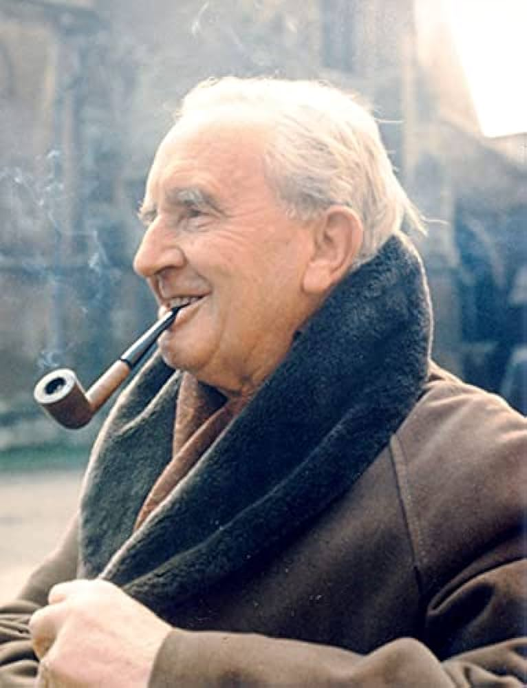

Autores em Destaque
1. J.R.R. Tolkien

J.R.R. Tolkien é o autor de clássicos como O Hobbit e O Senhor dos Anéis, sendo considerado o pai da literatura de fantasia moderna. Sua obra é rica em mitologia e linguística.
2. J.K. Rowling

J.K. Rowling é a criadora da famosa série Harry Potter, que conquistou milhões de leitores ao redor do mundo. Seus livros abordam temas de amizade, coragem e a luta entre o bem e o mal.
3. George R.R. Martin

George R.R. Martin é conhecido por sua série A Song of Ice and Fire, que inspirou a série de TV Game of Thrones. Suas histórias são marcadas por complexidade e reviravoltas inesperadas.